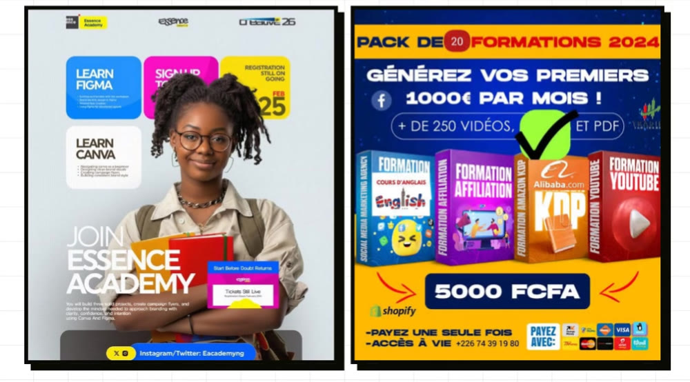
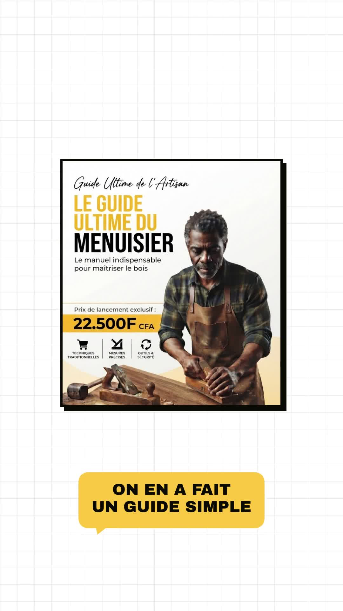
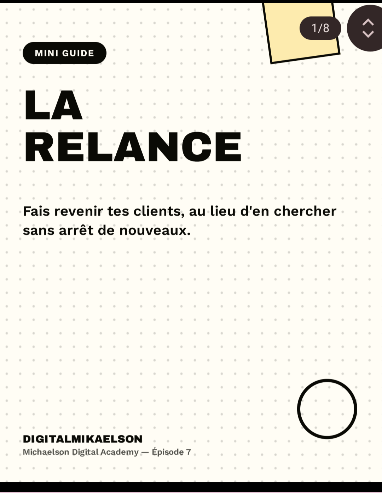

É
P
I
S
O
D
E
7
█
CHERCHER SANS ARRÊT
DE NOUVEAUX CLIENTS COÛTE CHER

SI TU VENDS DÉJÀ
UN PRODUIT DIGITAL
REGARDE TA LISTE
DE CLIENTS
💬
LA PLUPART, TU NE LEUR
AS PLUS JAMAIS REPARLÉ
LE PROBLÈME, C'EST
RAREMENT D'EN TROUVER
🔍
NOUVEAUX CLIENTS
😴
CEUX QU'ON
A DÉJÀ, OUBLIÉS
DANS NOTRE STRATÉGIE
V
E
N
D
R
E
C'EST LA RELANCE
TU RECONTACTES CEUX
QUI TE CONNAISSENT DÉJÀ
0
AU LIEU DE REPARTIR
DE ZÉRO À CHAQUE FOIS

IL VENDAIT SON PREMIER
GUIDE, PUIS PLUS RIEN
IL ATTENDAIT QUE DE NOUVELLES
PERSONNES LE DÉCOUVRENT
✏️
UN JOUR, IL A RÉÉCRIT
À TOUS CEUX QUI AVAIENT ACHETÉ
POUR LEUR PROPOSER UN
DEUXIÈME GUIDE, PLUS AVANCÉ
UN MESSAGE DIRECT,
PRESQUE PERSONNEL
PAS UNE PUB
LA MOITIÉ ONT ACHETÉ
À NOUVEAU, EN QUELQUES JOURS
📅
MAINTENANT, TOUTES
LES QUELQUES SEMAINES
MÊME JUSTE POUR
PRENDRE DES NOUVELLES
LA MOITIÉ DE SES VENTES
VIENT D'ANCIENS CLIENTS
UNE FOIS QUE TU SAIS
RELANCER LES MÊMES CLIENTS
UN SYSTÈME QUI
S'AMÉLIORE TOUT SEUL
C'EST L'ÉVOLUTION,
LA DERNIÈRE LETTRE
PROCHAIN ÉPISODE
V
E
N
D
R
E

ABONNE-TOI
👆
COMMENTE "RELANCE"
JE T'ENVOIE LE MINI GUIDE